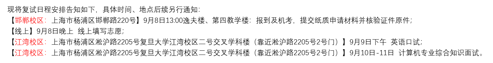
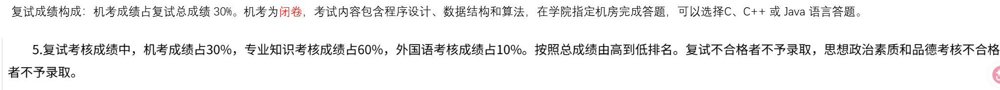
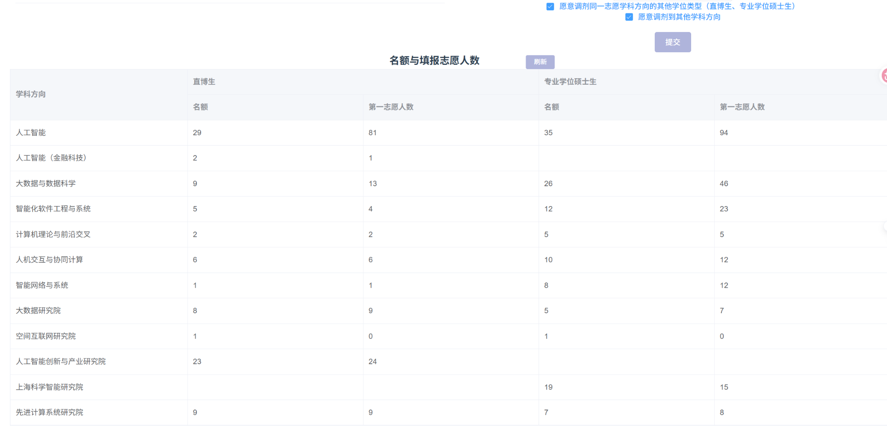

FIELD NOTE / 2026
复旦大学计算与智能创新学院
预推免
机考占 30%；专业面试曾深入追问斐波那契数列与矩阵快速幂。
机考 30%专业面试 60%英语口试 10%
01 / 整体流程与考核构成
- 复试主要分为机考、英语口试和专业综合面试三个环节。9 月 8 日下午报到并进行机考，当天晚上线上填报学科方向志愿；9 月 9 日下午进行英语口试，9 月 10—11 日进行专业综合面试。
- 官方成绩构成为：机考占复试总成绩的 30%，专业知识考核占 60%，外国语考核占 10%。机考为闭卷，内容包括程序设计、数据结构和算法，可使用 C、C++ 或 Java 作答。


02 / 入营情况与志愿填报
- 往年复旦这一学院通常被认为入营筛选比较严格。我听到的说法是，去年入营可能采用“强弱结合”的方式，导师也可能对部分学生的入营产生一定影响，但具体筛选机制我并不确定。以我们学院当时的情况来看，进入该学院预推免的貌似只有我一人，因此整体 bar 仍然比较高。
- 机考结束后的当天晚上会在线填报学科方向志愿。我当时填报的是人工智能方向。页面当时显示人工智能方向专硕名额为 35 人、第一志愿人数为 94 人，报录竞争大约接近 3:1。

03 / 机试
- 机试大约 2.5 小时，共 5 道题，每题 100 分，满分 500 分。第一题属于比较基础的“签到题”，后四题都有一定难度。我最后估计拿到了约 250 分，但没有看到非常明确的最终机试分数，因此这里只记录大致情况。
- 机试会提供少量可见测试信息，但对排错帮助比较有限：有的样例非常简单，其余测试情况往往比较复杂；真正用于计分的大部分测试用例是隐藏的，因此提交后很难像一些 OJ 那样通过测试点反馈快速定位具体错误。整体上更依赖一次性把算法和实现写正确。
- 从官方规则看，机考覆盖程序设计、数据结构和算法，成绩占复试总成绩的 30%。因此它不是单纯的资格测试，而是会直接进入最终总成绩。
04 / 英语口试
- 英语口试大约 5 分钟。前 1 分钟进行英文自我介绍，之后老师会围绕日常学习和个人情况进行英文问答，整体并不偏专业英语。
- 我之前记录的正式英语口试问题主要包括：介绍家乡；为什么选择人工智能作为本科专业；平时是否会使用 AI 模型、使用频率如何；未来有什么规划。
05 / 专业面试与实际体验
- 专业面试大约 15 分钟，开始先进行约 1 分钟的自我介绍，随后进入老师问答。我这场面试的压力明显比前面几所更大，老师追问节奏比较快。
- 一开始老师直接问算法题：如何求斐波那契数列第 n 项。我先介绍了多种方法，当讲到快速幂和矩阵快速幂后，老师连续追问时间复杂度、矩阵快速幂的具体过程、递推矩阵如何推导，以及快速幂中什么时候把当前乘数乘入结果、什么时候进行平方等。中间有些地方我讲错了，在老师提示后才逐步补完整。
- 科研部分也比较出乎我的预期。我有一篇一作论文和一项非一作科研经历，但老师基本没有追问一作论文，反而集中问了第二个科研项目所使用的数据集与已有数据集有什么区别、数据集带来了哪些新挑战，以及我们的方法如何针对这些挑战进行解决。最后还问了一个机器学习基础问题，之后时间就到了。
- 整体面完以后我感觉发挥一般：算法题虽然最后基本讲出来了，但过程中有几次错误和老师提示；科研部分也没有围绕我最熟悉的一作论文展开，因此当时我觉得结果可能不会特别好。
06 / 正式面试问题整理
- 算法与复杂度：介绍几种求斐波那契数列的方法；在黑板上演示一种方法；快速幂的时间复杂度；用矩阵快速幂求斐波那契数列的具体过程；递推矩阵如何推导；快速幂中什么时候将当前乘数乘入最终结果、什么时候让当前乘数自乘。
- 科研项目：第二个科研项目所使用的数据集与已有数据集相比有什么区别；这个数据集带来了哪些新的挑战；针对这些挑战，你们提出的方法是如何解决的。
- 机器学习：请介绍机器学习中典型的判别模型和生成模型，并分别举例说明。
- 英语口试：Please introduce yourself；Could you please introduce your hometown；Why did you choose Artificial Intelligence as your undergraduate major；Do you use any AI models in your daily study or research；How often do you use AI models；What are your plans for the future。
07 / 最终结果、导师联系与后续选择
- 最终结果是候补。虽然我面试结束后感觉希望不大，但复旦往年经常会出现较深的候补顺延，我这一年也确实如此。9 月 22日左右，我接到了复旦方面的电话，说明候补已经顺延到我。
- 我在复试前也联系过一位老师，对方的意思是先通过学院考核，再进一步进行导师面试。因此复旦并不是一定要提前和导师完成双选后才能参加复试。老师给我的印象很好，但当时我还没有进一步了解具体会安排什么研究方向、是否方便实习等细节。 但在接到复旦电话时，我在浙江大学这边已经基本确定了导师，而且导师允许实习, 综合这些因素，我最后没有接受复旦的候补名额，选择了浙江大学。
PS: 复旦专硕不提供宿舍,需要自己租房。